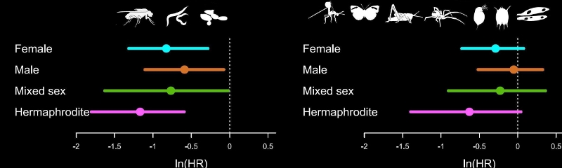
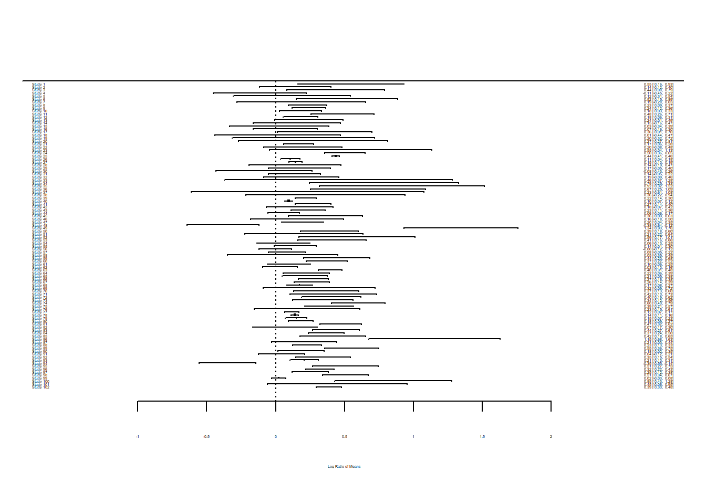
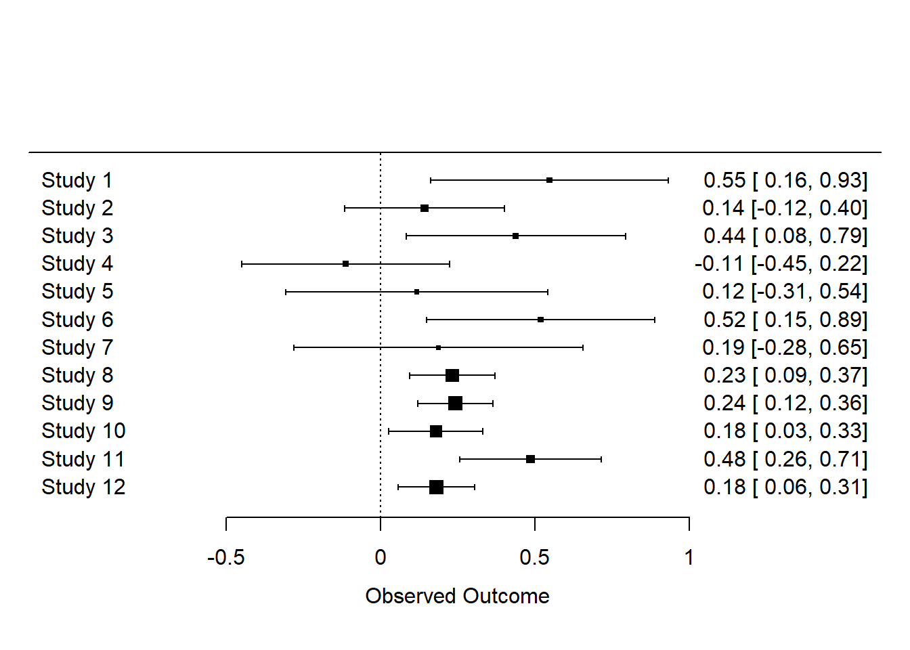

library(metafor)
library(metadat)Introduction al meta-análisis
Antecedentes
¿Qué es un meta-análisis?
El meta-análisis es un resumen cuantitativo de estudios sobre el mismo tema.
¿Por qué queremos realizar un meta-análisis?
- Encontrar generalidades
- Aumentar el poder y la precisión
- Explorar las diferencias entre estudios
- Resolver controversias entre estudios conflictivos (pruebas de hipótesis)
- Generar nuevas hipótesis

El proceso de meta-análisis
¿Cuántos pasos involucra el meta-análisis?
Una respuesta basica se forma de 5 pasos
Formular preguntas e hipótesis o encontrar un tema
Búsqueda bibliográfica y recopilación de artículos
Extracción de datos y codificación
Meta-análisis y pruebas de sesgo de publicación
Informe y publicación
En este tutorial solo consideramos el paso iv. Debes aprender los otros pasos en otro lugar. Para comenzar, recientemente escribimos un artículo de revisión que divide el proceso de meta-análisis en 10 preguntas (Nakagawa et al. 2017). Las 10 preguntas te guiarán para evaluar la calidad de un meta-análisis.
- ¿La búsqueda es sistemática y está documentada de manera transparente?
- ¿Qué pregunta y qué tamaño de efecto?
- ¿Se tiene en cuenta la no independencia?
- ¿Qué modelo meta-analítico?
- ¿Se informa el nivel de consistencia entre los estudios?
- ¿Se investigan las causas de la variación entre los estudios?
- ¿Se interpretan los efectos en términos de importancia biológica?
- ¿Se ha considerado el sesgo de publicación?
- ¿Los resultados son realmente robustos e imparciales?
- ¿Se resume el estado actual (y la falta) de conocimiento?
Metafor para meta-análisis
Creo que el paquete R metafor (Viechtbauer 2010) es el software meta-analítico más completo y el autor Wolfgang Viechtbauer, quien, debo decir, tiene el nombre más genial entre mis amigos, todavía lo está desarrollando activamente.
Primero, instala y carga el paquete metafor.
Mira el conjunto de datos llamado dat.curtis1998 incluido en el paquete metadat.
dat <- metadat::dat.curtis1998
str(dat)'data.frame': 102 obs. of 20 variables:
$ id : int 21 22 27 32 35 38 44 63 86 87 ...
$ paper : int 44 44 121 121 121 121 159 183 209 209 ...
$ genus : chr "ALNUS" "ALNUS" "ACER" "QUERCUS" ...
$ species : chr "RUBRA" "RUBRA" "RUBRUM" "PRINUS" ...
$ fungrp : chr "N2FIX" "N2FIX" "ANGIO" "ANGIO" ...
$ co2.ambi: num 350 350 350 350 350 350 350 395 350 350 ...
$ co2.elev: num 650 650 700 700 700 700 700 795 700 700 ...
$ units : chr "ul/l" "ul/l" "ppm" "ppm" ...
$ time : int 47 47 59 70 64 50 730 365 365 365 ...
$ pot : chr "0.5" "0.5" "2.6" "2.6" ...
$ method : chr "GC" "GC" "GH" "GH" ...
$ stock : chr "SEED" "SEED" "SEED" "SEED" ...
$ xtrt : chr "FERT" "FERT" "NONE" "NONE" ...
$ level : chr "HIGH" "CONTROL" "." "." ...
$ m1i : num 6.82 2.6 2.99 5.91 4.61 ...
$ sd1i : num 1.77 0.667 0.856 1.742 1.407 ...
$ n1i : int 3 5 5 5 4 5 3 3 20 16 ...
$ m2i : num 3.94 2.25 1.93 6.62 4.1 ...
$ sd2i : num 1.116 0.328 0.552 1.631 1.257 ...
$ n2i : int 5 5 5 5 4 3 3 3 20 16 ...Este conjunto de datos es del artículo de Curtis y Wang (1998). Analizaron el efecto del aumento de CO\(_2\) en rasgos de las plantas (principalmente cambios en la biomasa). Por lo tanto, tenemos información sobre el grupo de control (1) y el grupo experimental (2) (m = media, sd = desviación estándar), junto con información de especies y detalles experimentales. En meta-análisis, estas variables a menudo se denominan ‘moderadores’ (hablaremos un poco más sobre esto más adelante).

Cálculo de tamaños de efecto ‘estandarizados’
Para comparar el efecto del aumento de CO\(_2\) en varios estudios, primero necesitamos calcular un tamaño de efecto para cada estudio, una métrica que cuantifica la diferencia entre nuestros grupos de control y experimental.
Existen varios tamaños de efecto ‘estandarizados’, que son adimensionales. Cuando tenemos dos grupos para comparar, utilizamos dos tipos de estadísticas de tamaño de efecto. El primero es la diferencia de medias estandarizada (SMD, también conocida como \(d\) de Cohen o \(d\) de Hedge o \(g\); existen algunas diferencias sutiles entre ellos, pero no nos preocuparemos por ellas por ahora):
\[\begin{equation} \mathrm{SMD}=\frac{\bar{x}_{E}-\bar{x}_{C}}{\sqrt{\frac{(n_{C}-1)sd^2_{C}+(n_{E}-1)sd^2_{E}}{n_{C}+n_{E}-2}}} \end{equation}\]
donde \(\bar{x}_{C}\) y \(\bar{x}_{E}\) son las medias del grupo de control y experimental, respectivamente, \(sd\) es la desviación estándar de la muestra (\(sd^2\) es la varianza de la muestra) y \(n\) es el tamaño de la muestra.
Y la varianza del error de la muestra es:
\[\begin{equation} se^2_{\mathrm{SMD}}= \frac{n_{C}+n_{E}}{n_{C}n_{E}}+\frac{\mathrm{SMD}^2}{2(n_{C}+n_{E})} \end{equation}\]
La raíz cuadrada de esto se denomina ‘error estándar’ (o desviación estándar de la estimación, ¿confuso?). El inverso de esto (\(1/se^2\)) se utiliza como ‘peso’, pero las cosas son un poco más complicadas que esto, como descubriremos a continuación.
Otro índice común se llama ‘cociente de respuesta’, que generalmente se presenta en su forma de logaritmo natural (lnRR):
\[\begin{equation} \mathrm{lnRR}=\ln\left({\frac{\bar{x}_{E}}{\bar{x}_{C}}}\right) \end{equation}\]
Y la varianza del error de muestreo es:
\[\begin{equation} se^2_\mathrm{lnRR}=\frac{sd^2_{C}}{n_{C}\bar{x}^2_{C}}+\frac{sd^2_{E}}{n_{E}\bar{x}^2_{E}} \end{equation}\]
Obtenemos esto utilizando la función escalc de metafor. Para obtener la diferencia media estandarizada, utilizamos:
# SMD
SMD <- escalc(measure = "SMD", n1i = dat$n1i, n2i = dat$n2i, m1i = dat$m1i, m2i = dat$m2i,
sd1i = dat$sd1i, sd2i = dat$sd2i)donde n1i y n2i son los tamaños de muestra, m1i y m2i son las medias, y sd1i y sd2i son las desviaciones estándar de cada uno de los estudios.
El objeto creado ahora tiene un tamaño de efecto (yi) y su varianza (vi) para cada estudio.
yi vi
1 1.8222 0.7408
2 0.5922 0.4175
3 1.3286 0.4883
4 -0.3798 0.4072
5 0.3321 0.5069
6 2.5137 0.9282 Para obtener la razón de respuesta (logaritmo transformado de la razón de medias), usaríamos:
lnRR <- escalc(measure = "ROM", n1i = dat$n1i, n2i = dat$n2i, m1i = dat$m1i, m2 = dat$m2i,
sd1i = dat$sd1i, sd2i = dat$sd2i)El artículo original utilizó lnRR, así que lo usaremos, pero es posible que desees repetir el análisis a continuación utilizando SMD para ver si los resultados son consistentes.
Agrega los tamaños de efecto al conjunto de datos original con cbind o bind_cols del paquete dplyr.
library(dplyr)
dat <- bind_cols(dat, lnRR)Deberías ver que se agregan yi (tamaño de efecto) y vi (varianza de muestreo).
'data.frame': 102 obs. of 22 variables:
$ id : int 21 22 27 32 35 38 44 63 86 87 ...
$ paper : int 44 44 121 121 121 121 159 183 209 209 ...
$ genus : chr "ALNUS" "ALNUS" "ACER" "QUERCUS" ...
$ species : chr "RUBRA" "RUBRA" "RUBRUM" "PRINUS" ...
$ fungrp : chr "N2FIX" "N2FIX" "ANGIO" "ANGIO" ...
$ co2.ambi: num 350 350 350 350 350 350 350 395 350 350 ...
$ co2.elev: num 650 650 700 700 700 700 700 795 700 700 ...
$ units : chr "ul/l" "ul/l" "ppm" "ppm" ...
$ time : int 47 47 59 70 64 50 730 365 365 365 ...
$ pot : chr "0.5" "0.5" "2.6" "2.6" ...
$ method : chr "GC" "GC" "GH" "GH" ...
$ stock : chr "SEED" "SEED" "SEED" "SEED" ...
$ xtrt : chr "FERT" "FERT" "NONE" "NONE" ...
$ level : chr "HIGH" "CONTROL" "." "." ...
$ m1i : num 6.82 2.6 2.99 5.91 4.61 ...
$ sd1i : num 1.77 0.667 0.856 1.742 1.407 ...
$ n1i : int 3 5 5 5 4 5 3 3 20 16 ...
$ m2i : num 3.94 2.25 1.93 6.62 4.1 ...
$ sd2i : num 1.116 0.328 0.552 1.631 1.257 ...
$ n2i : int 5 5 5 5 4 3 3 3 20 16 ...
$ yi : num 0.547 0.143 0.438 -0.113 0.117 ...
..- attr(*, "ni")= int [1:102] 8 10 10 10 8 8 6 6 40 32 ...
..- attr(*, "measure")= chr "ROM"
$ vi : num 0.0385 0.0175 0.0328 0.0295 0.0468 ...Visualización del tamaño de efecto. Podemos visualizar las estimaciones puntuales (tamaño de efecto) y sus intervalos de confianza del 95%, basados en la varianza del error de muestreo, utilizando la función forest, que dibuja un diagrama de bosque para nosotros.
forest(dat$yi, dat$vi)
El problema que observas es que cuando hay muchos estudios, un diagrama de bosque no funciona realmente (¡a menos que tengas una pantalla muy grande!). Veamos solo los primeros 12 estudios.
forest(dat$yi[1:12], dat$vi[1:12])
Podemos calcular muchos tipos diferentes de tamaños de efecto con escalc; otras estadísticas comunes de tamaño de efecto incluyen \(Zr\) (correlación transformada z de Fisher). Por cierto, junto con mis colegas, hemos propuesto un nuevo tamaño de efecto estandarizado llamado lnCVR (el logaritmo de la razón del coeficiente de variación, ¡es un nombre largo!), que compara la variabilidad de dos grupos en lugar de las medias. Veamos si puedes calcularlo con estos datos. De hecho, la versión de desarrollo de metafor te permite hacer esto con escalc - página de GitHub. lnCVR se llama “CVR” en escalc. De hecho, si reanalizas estos datos con lnCVR, ¡puede que puedas publicar un artículo! Nadie lo ha hecho aún. ¡Hazlo esta noche!
Una vez que hayas calculado los tamaños de efecto, pasa a la siguiente página: Meta-análisis 2: modelos de efectos fijos y efectos aleatorios
Más ayuda (referencias)
Visita el sitio web del paquete metafor. Allí encontrarás muchos ejemplos prácticos.
Curtis, P. S., y X. Z. Wang. 1998. A meta-analysis of elevated CO2 effects on woody plant mass, form, and physiology. Oecologia 113:299-313.
Nakagawa, S., R. Poulin, K. Mengersen, K. Reinhold, L. Engqvist, M. Lagisz y A. M. Senior. 2015. Meta-analysis of variation: ecological and evolutionary applications and beyond. Methods in Ecology and Evolution 6:143-152.
Viechtbauer, W. 2010. Conducting meta-analyses in R with the metafor package. Journal of Statistical Software 36:1-48.
Autores: Shinichi Nakagawa y Malgorzata (Losia) Lagisz
Año: 2016
Última actualización: Nov. 2023